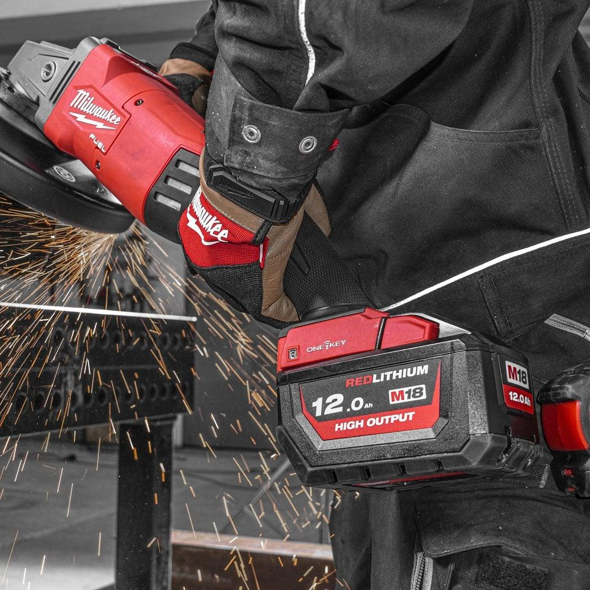
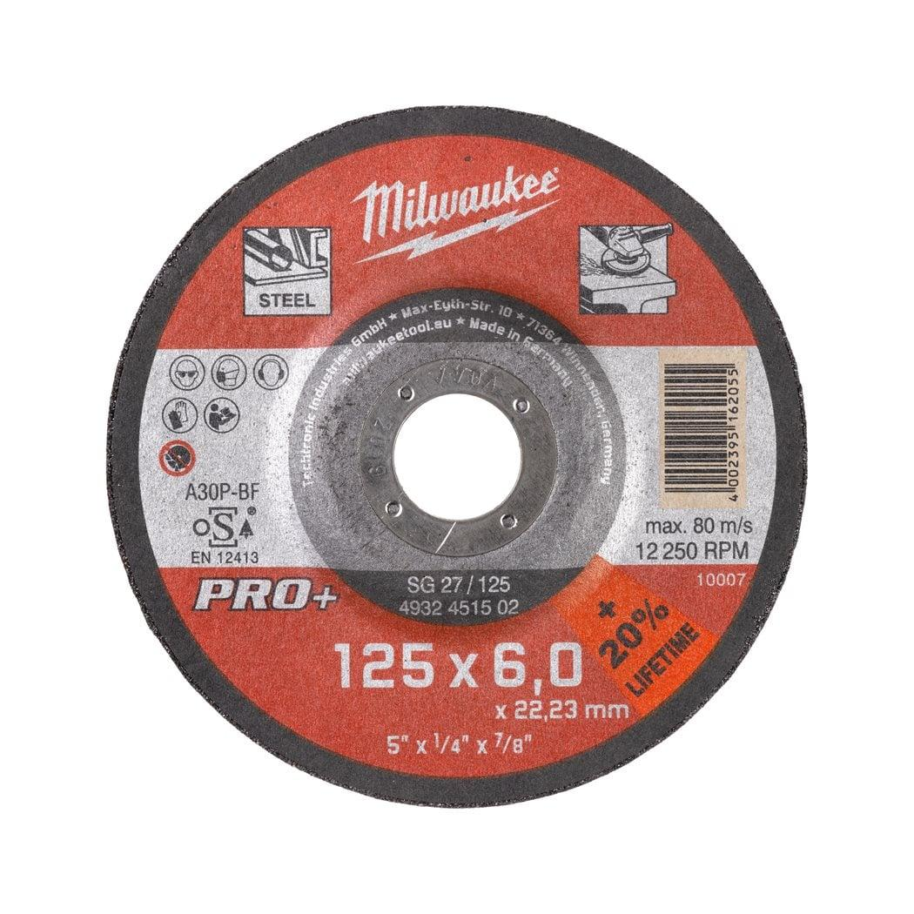

<h1>Milwaukee | Grind W Pro+ SG27 125mm x 6mm 1pc Metal</h1><p>4932451502</p><div style="display:flex;flex-wrap:wrap;gap:8px"></div><h4>Features</h4><ul><li>Applications: Sound performance in mild steel and non alloy tool steel.</li><li>Characteristics: Provides good lifetime and efficient grinding characteristics.</li></ul><h4>Information</h4><table><tr><td>Bore size (mm)</td><td>22.2</td></tr><tr><td>Description</td><td>SG 27 / 125</td></tr><tr><td>Disc diameter (mm)</td><td>125</td></tr><tr><td>Pack quantity</td><td>1</td></tr><tr><td>Profile</td><td>SG 27 / 125</td></tr><tr><td>Thickness (mm)</td><td>6</td></tr></table>